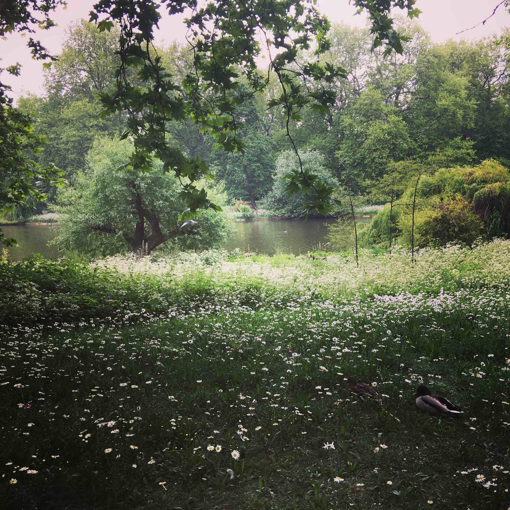

About
Sunwoo Jeong is a Korean writer living in NYC and Seoul in alternation. She is an academic linguist by day and an author by night. Her work has appeared in Split Lip, Fantasy, Lightspeed, and Uncanny magazine, among others, and has been included in the Wigleaf Top 50 Long List. A Kundiman Fellow and a Clarion alum, Sunwoo is currently working on a collection of linked short stories and a novel.
This is her fiction writing website. Her academic research output can be found Here
Short Stories
Links to magazines where the stories first appeared.
- Permanent Press in Uncanny (April, 2026; Author Interview)
- The Dragon and the Bog in Fantasy (September, 2025)
- The Lexicon of Lethe in Lightspeed (March, 2025; Author Spotlight)
- The Midnight Spa in Uncanny (July, 2024)
Translations.
- The Lexicon of Lethe in Science Fiction World (To Appear, Translation in Chinese)
Collaborations.
- Awe Studies: We Look to be Undone, or at least Entered in Cleveland Review of Books (Led by Jess Richardson)
Flash Stories
Links to selected flash stories.
- The Perfect Fuss in The Lit Nerds (March, 2025)
- David Lewis Says in Split Lip (December, 2023; Just One Thing with the Author)
News and Contact
Residencies and workshops
Professional Affiliations and Service